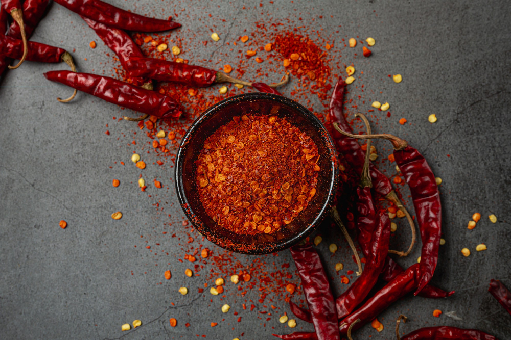

THE BEST STRAWBERRIE CHILLI PASTE EVER

chilli paste is just the best!!!
I don't really eat spicy food and I never made chilli myself...
Which is why I belive that I am the best person you can
find to recommend my improvised
"I guess it will turn out good"
strawberry chilli paste
ps: Do not try this at home
ingridients
- Extra virgin olive oil
- Garlic powder
- Black pepper
- Strawberry sirup
- bread crumbs
- A pinch of salt
In that very specific order:
- in a mixing bowl, trow in a handfull
of Extra Virgin Olive Oil
good job...
now go wash your hands...- did you use soap?
- then go wash them again and with soap this time!!
- add three grammes of garlic powder
- put in five grammes of black pepper
(it is verry important that the sirup is my favorite brand)
- mix until your arm hurts
- then add in the delissious sirup (not more then a coffee spoon
because we don't want to
waste it as the preparation will be discusting!)
- at this point, just add the bread crumbs and the salt,
who cares..
- pour the preparation in your favorite teapot and then trow it
against the wall!!
and it's ready!!!
On a more serious note,
I've just looked up an actual recipe of a strawberry chilli relish,
it looks pretty good... click
here
to see it